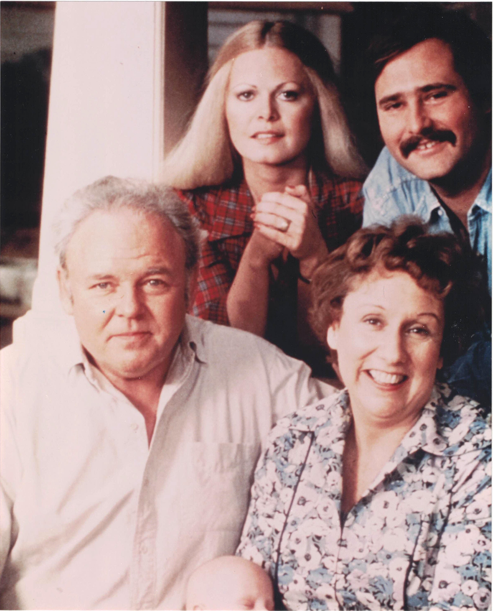

Product No. HEC-0057
$18.99
Shipping: $8.95
Description
8x10 color photograph
Full Description
"All in the Family" is an American television sitcom that originally aired from 1971 to 1979 and became one of the most influential programs in television history. Created by Norman Lear and based on the British series "Till Death Us Do Part," the show used comedy to address controversial social and political issues rarely discussed so openly on television at the time. The series starred Carroll O'Connor as Archie Bunker, a stubborn, outspoken working-class man living in Queens, New York. Jean Stapleton played his kindhearted wife, Edith Bunker. Their daughter Gloria, played by Sally Struthers, lived with them along with her husband Michael Stivic, portrayed by Rob Reiner. Archie frequently clashed with Michael, whom he mockingly called "Meathead," over politics, race, religion, women's rights, and changing social attitudes. Despite Archie's prejudices and abrasive personality, the series often used his views to expose hypocrisy and challenge stereotypes. Edith became one of television's most beloved characters, while the chemistry among the four principal cast members helped make the show both funny and emotionally powerful. "All in the Family" was a major ratings success and won numerous Emmy Awards. It also produced several successful spin-offs, including "The Jeffersons," "Maude," and "Archie Bunker's Place." The show's groundbreaking approach to serious subjects helped transform American television comedy and continues to make cast autographs, photographs, and memorabilia popular with collectors of classic television.
Condition
Excellent condition